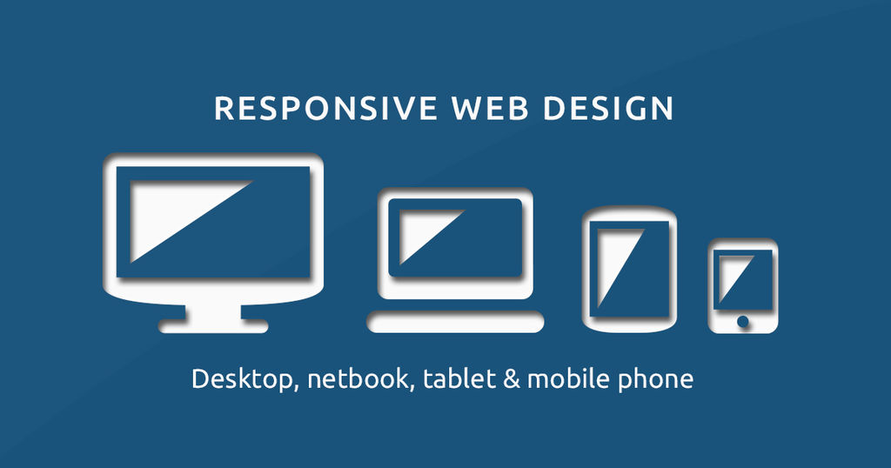
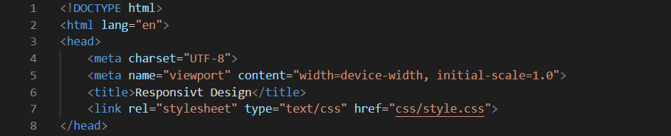
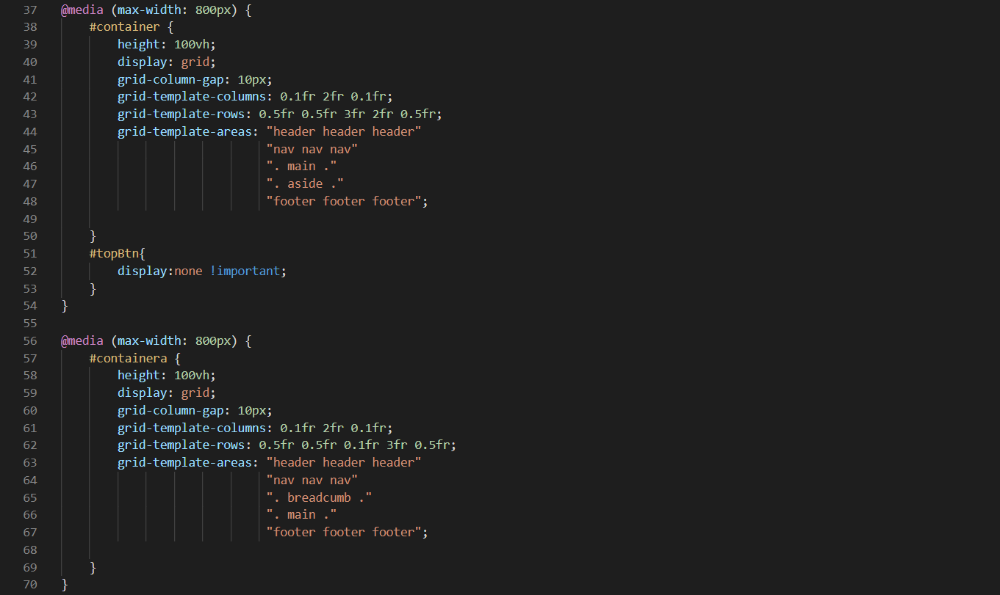

Responsivt Design
27.10.2020
Hva er Responsivt Design?
Det er en fleksibel design som kan endre form og dimensjoner ved å endre skjermstørrelsen på enheten som nettstedet vises gjennom. Hvis det er en bærbar datamaskin, smarttelefon eller nettbrett, endrer nettstedet automatisk grensesnittet i henhold til de nye størrelsene på skjermen eller i henhold til størrelsen på nettleseren.
Hvorfor er responsivt design viktig?
Det er mange studier som bekrefter at surfing på en mobiltelefon har overgått de som foregår på datamaskiner se kilde 1. Derfor har det blitt viktig for nettstedet ditt å ha et responsivt design som passer til alle slags forskjellige elektroniske enheter som brukes til å besøke nettstedet ditt. Disse enhetene varierer fra veldig små skjermer, for eksempel smarttelefoner, til veldig store skjermer, for eksempel store TV-skjermer.
I tillegg til å gi nettstedsbrukeren en unik brukeropplevelse, vil du få bedre resultater i søkemotorresultatene når du bruker et responsivt design se kilde 2.
Hvordan kan du bruke responsivt design?
Du må først legge til < meta name = "viewport" / > -koden i < head > området for å kunne bruke @media-egenskapen.
Du kan velge oppsett avhengig av nettleserbredden, og fordi nettleserbredden er relatert til størrelsen på brukerens enhet, lar denne muligheten deg dermed definere forskjellige oppsett for forskjellige enheter.
Så kan du bruke @media med en maksimal bredde på 800 piksler, for eksempel hvis skjermstørrelsen (som er det samme som nettleserbredden) er mindre enn 800 piksler, vil spesielle egenskaper bli brukt. Du kan bruke alle typer egenskaper du vil, innenfor delen av @media.
